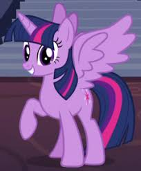
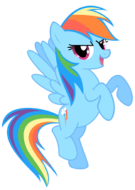
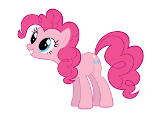
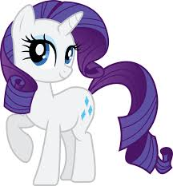
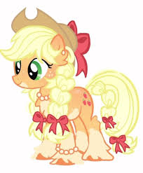
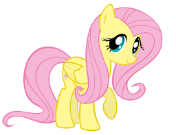

Какая пони из My Little Pony ближе всего тебе? 🦄
Выбирая любимую пони, мы часто находим в ней черты, близкие нашему характеру.Кто-то восхищается умом и трудолюбием Твайлайт Спаркл, кто-то любит яркую и смелую Рэйнбоу Дэш, а
кто-то чувствует себя загадочной, как Принцесса Луна.
✨ На этом сайте ты сможешь узнать, какая пони из My Little Pony больше всего подходит тебе!
- 🔹 Чем заняться?
- Прочитать описания персонажей – узнай больше о любимых пони и найди свою!
- Пройти тест (скоро появится!) – ответь на вопросы и получи свой результат!
- Обсудить с друзьями – какой персонаж вам ближе всего?
💖 Готов(-а) погрузиться в мир Эквестрии? Тогда выбирай пони!
🟣 Твайлайт Спаркл(Искорка) – умная и организованная, любит учиться и планировать
📌 Твайлайт Спаркл – настоящий гений, который обожает книги и знания.
Она всегда стремится к саморазвитию и ценит структуру и порядок.
Но иногда слишком переживает из-за ожиданий.
- ✨ Факты:
- Обожает книги 📚
- Всегда стремится быть лучшей
- Иногда переживает из-за мелочей
- Подходит ли тебе Твайлайт?
- Ты любишь учиться и узнавать новое?
- Ты хорошо организован(-а)?
- Тебя волнует мнение окружающих?
🌈 Рэйнбоу Дэш – быстрая, смелая и немного хвастливая
📌 Рэйнбоу Дэш – самая быстрая пони в Эквестрии!
Она энергична, уверена в себе и всегда стремится быть лучшей.
Может показаться хвастливой, но на самом деле очень предана друзьям.
- ✨ Факты:
- Обожает скорость и соревнования 🏆
- Мечтает попасть в Чудо-молнию ✈️
- Никогда не бросает друзей
- Подходит ли тебе Рэйнбоу Дэш?
- Ты любишь спорт или активный образ жизни?
- Тебе важно быть лучшим?
- Ты всегда защищаешь друзей?
🎉 Пинки Пай – веселая, шумная, но добрая и заботливая
📌 Пинки Пай – настоящая душа компании! Она любит вечеринки, розыгрыши и веселье.
Но иногда за её шутками скрывается тревога – ведь она хочет, чтобы все были счастливы.
- ✨ Факты:
- Всегда устраивает вечеринки 🎈
- Обожает сладости 🍰
- Иногда становится серьёзной, когда грустит
- Подходит ли тебе Пинки Пай?
- Ты любишь радовать людей?
- Ты всегда полон(-а) энергии?
- Ты не любишь, когда кто-то грустит?
💎 Рэрити – стильная, творческая и немного драматичная
📌 Рэрити – пони, которая ценит красоту, искусство и элегантность.
Она мечтает стать известным дизайнером, но при этом всегда готова помочь друзьям.
- ✨ Факты:
- Обожает моду и шить одежду 👗
- Умеет красиво говорить и вести себя в обществе
- Иногда может быть слишком драматичной
- Подходит ли тебе Рэрити?
- Ты любишь моду и стиль?
- Тебе нравится творить и создавать что-то красивое?
- Ты можешь быть немного эмоциональным(-ой)?
🍏 Эпплджек – честная, трудолюбивая и надёжная
📌 Эпплджек – это пони, которая никогда не врёт.
Она ценит труд, семью и традиции.
Может быть упрямой, но всегда готова прийти на помощь.
- ✨ Факты:
- Живёт на яблочной ферме 🍎
- Всегда говорит правду, даже если это трудно
- Может работать до изнеможения
- Подходит ли тебе Эпплджек?
- Ты честный(-ая) и прямолинейный(-ая)?
- Ты ценишь семью и близких?
- Ты любишь работать на результат?
🌸 Флаттершай – нежная, добрая, но сильная внутри
📌 Флаттершай – самая застенчивая и добрая пони.
Она любит животных и предпочитает тишину.
Но если нужно, может проявить силу характера.
- ✨ Факты:
- Любит животных 🦜
- Стесняется, но очень заботливая
- Может быть решительной, когда это важно
- Подходит ли тебе Флаттершай?
- Ты любишь животных и заботишься о них?
- Ты интроверт и предпочитаешь тишину?
- Ты можешь быть нежным(-ой), но сильным(-ой) в нужный момент?